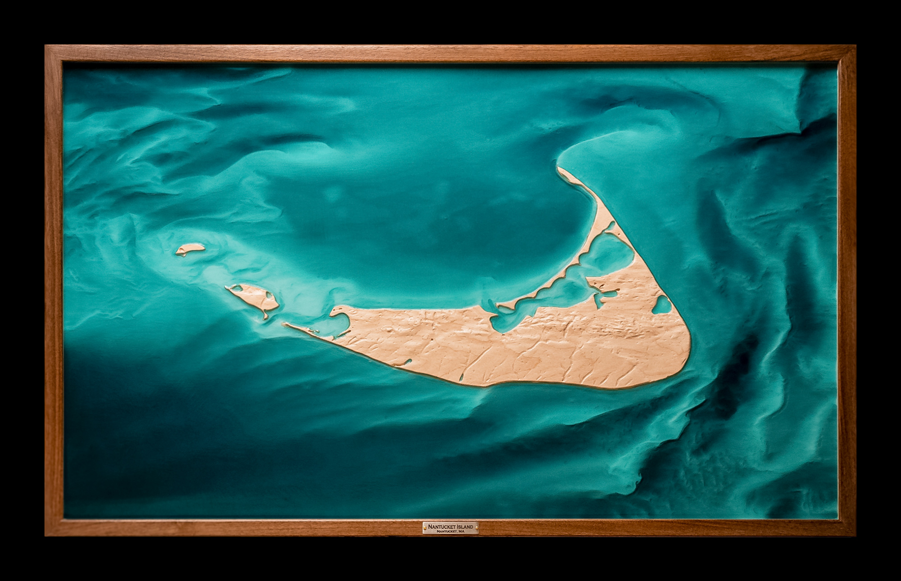

Custom Topographic Art
Handcrafting Landscape into Legacy
The art of place, captured in collaboration.
Together, we transform real terrain into handcrafted relief
—grounded in geospatial data, finished entirely by hand.
Through a collaborative, intentionally iterative process, the piece evolves
to reflect both landscape and personal meaning.
Recent Works


Capture Your Story
Transform the geography that matters most into an heirloom work.
Request a Commission